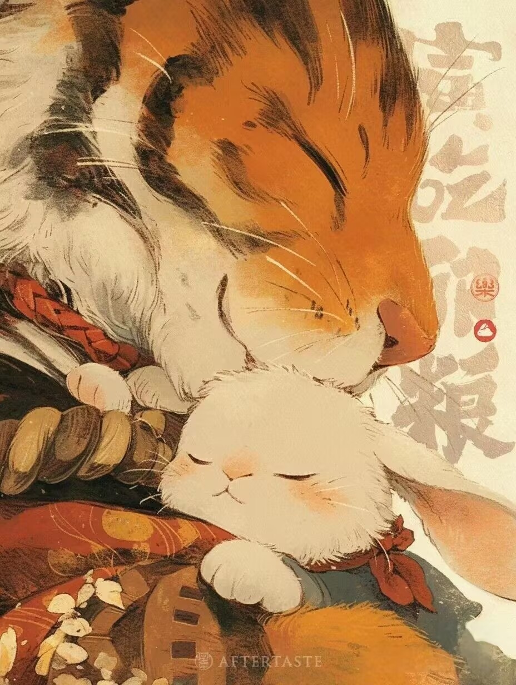
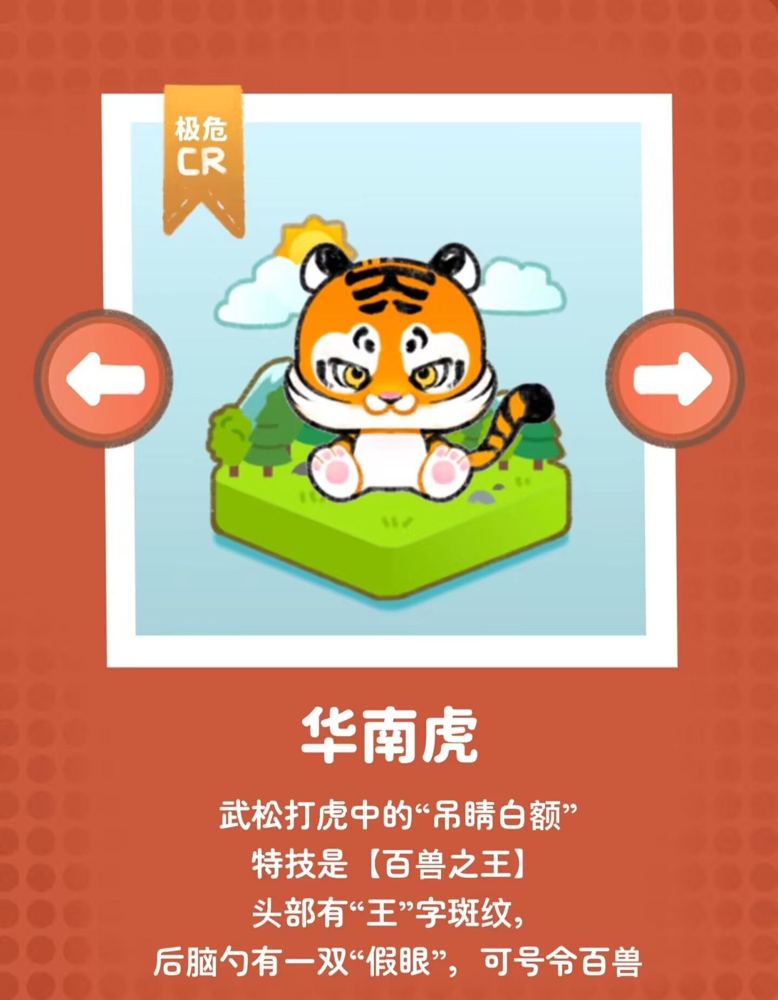
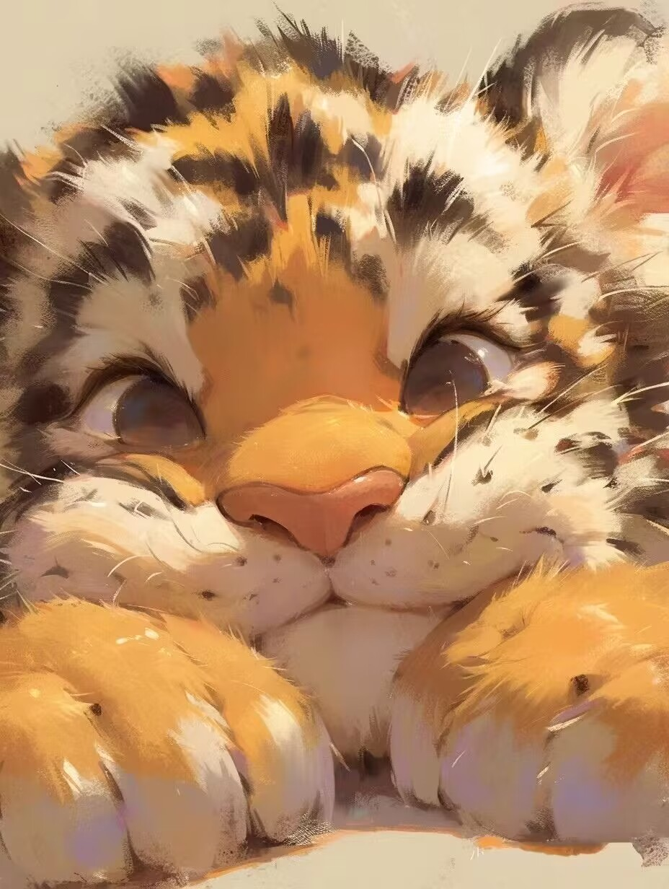

| 首页 | 全球动物保护日历 | 濒危动物图鉴 | 国际上采取措施 | 行动指南 | Every Live Is A Part Of The Planet We Called Earth. |
 华南虎想对你说： “请保护我们的栖息地，让我们在自然中自由奔跑。虎虎爱你！” |
 |  华南虎被列为极度濒危（可能在野外灭绝）。根据证据的平衡，该分类亚种似乎已在野外灭绝，但仍有一些个体仍然存在的可能性很小。虽然广泛的调查未能产生可验证的华南虎证据，但调查并未详尽覆盖整个历史范围(IUCN2001)（最初覆盖16个县，尽管在12个县被认为已完全灭绝：Wozencraft等人，2008年）。尽管由于猎物密度低、栖息地广泛退化和破碎化以及其他人类压力，人们认为继续生存不太可能，但偶尔仍有未经证实的野生华南虎报告。自20世纪70年代初以来，没有任何官方或生物学家见过野生华南虎，当时最后的验证记录是一只被圈养的动物(Tilson et）。 |
| 首页 | 全球动物保护日历 | 濒危动物图鉴 | 国际上采取措施 | 行动指南 | We All Live In The Same Earth , Breathe The Same Air. |